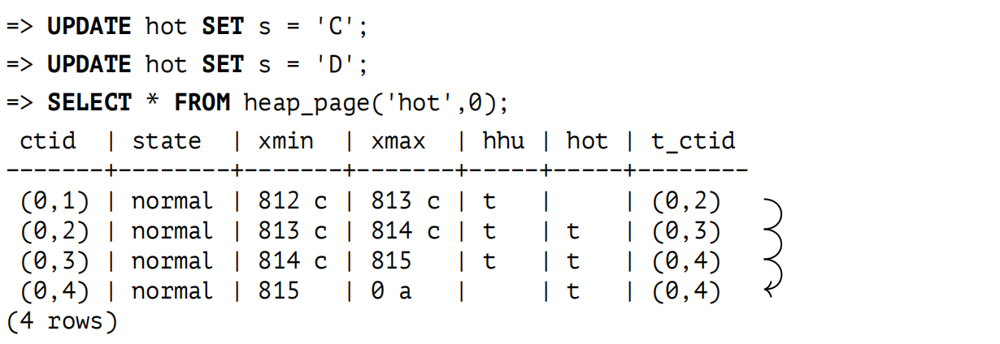
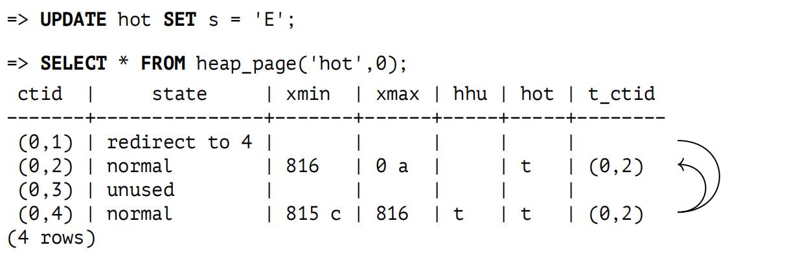
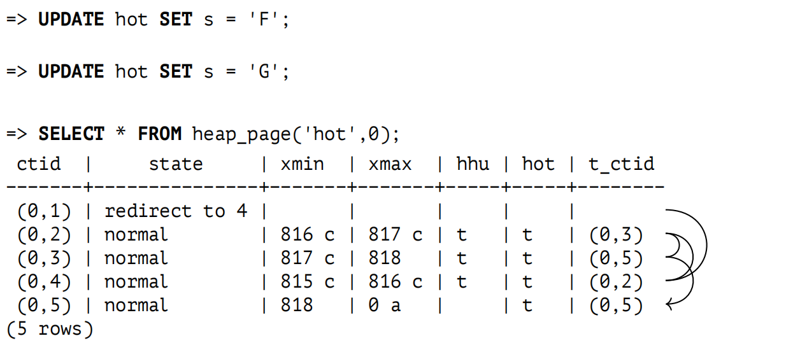
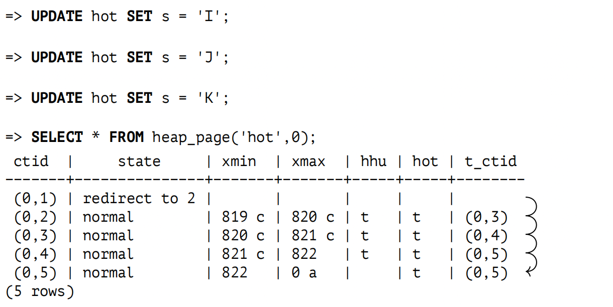

第 5 章：页剪枝与 HOT 更新
5.1 页剪枝
在读取或更新堆页面时，PostgreSQL 可以执行一些快速的页面清理，或称之为剪枝 1。剪枝发生在以下情况：
- 之前的 UPDATE 操作没有找到足够的空间将新元组放入同一页面中。此事件反映在页头中。
- 堆页面中包含的数据超过了 fillfactor 存储参数所允许的量。仅当此页面的填充率低于 fillfactor 百分比时，INSERT 操作才能将新行添加到页面中。其余空间会保留，用于 UPDATE 操作 (默认情况下不保留此空间) 。
页剪枝会移除在任何快照中都不再可见的元组 (即超出数据库视界的元组)。页剪枝永远不会超出单个堆页面的范围，但相对得，它执行得非常快。指向剪枝后的元组指针仍在原处，它们可能会被不同的页面所引用。
出于同样的原因，也不会刷新可见性映射和空闲空间映射 (因此回收的空间是为更新留存的，而不是用于插入)。
由于可以在读取过程中修剪页面，因此任何的 SELECT 语句都可能导致页面修改。这是除了延迟设置提示位之外的另一种情况。
让我们看一下页剪枝实际是如何工作的。我们将创建一个含有两列的表，并在每一列上创建一个索引：
=> CREATE TABLE hot(id integer, s char(2000)) WITH (fillfactor = 75);
=> CREATE INDEX hot_id ON hot(id);
=> CREATE INDEX hot_s ON hot(s);如果 s 列仅包含拉丁字母，那么每个堆元组将具有 2004 字节的固定大小，加上 24 个字节的元组头。fillfactor 存储参数设置为 75%。这意味着页面有足够的空间容纳四个元组，但我们只能插入三个。
让我们插入一行数据并多次更新：
=> INSERT INTO hot VALUES (1, 'A');
=> UPDATE hot SET s = 'B';
=> UPDATE hot SET s = 'C';
=> UPDATE hot SET s = 'D';现在页面包含四个元组：
=> SELECT * FROM heap_page('hot',0);
ctid | state | xmin | xmax
−−−−−−−+−−−−−−−−+−−−−−−−+−−−−−−−
(0,1) | normal | 801 c | 802 c
(0,2) | normal | 802 c | 803 c
(0,3) | normal | 803 c | 804
(0,4) | normal | 804 | 0 a
(4 rows)不出所料，我们刚刚超过了 fillfactor 阈值。你可以通过 pagesize 和 upper 之间的差值来判断 — 它大于页面大小的 75 %，即 6144 个字节：
=> SELECT upper, pagesize FROM page_header(get_raw_page('hot',0));
upper | pagesize
−−−−−−−+−−−−−−−−−−
64 | 8192
(1 row)下一次页面访问将会触发页剪枝，移除所有过期元组。然后，在释放的空间中添加一个新的元组 (0,5)：
=> UPDATE hot SET s = 'E';
=> SELECT * FROM heap_page('hot',0);
ctid | state | xmin | xmax
−−−−−−−+−−−−−−−−+−−−−−−−+−−−−−−
(0,1) | dead | |
(0,2) | dead | |
(0,3) | dead | |
(0,4) | normal | 804 c | 805
(0,5) | normal | 805 | 0 a
(5 rows)剩余的堆元组在物理上会被移向页面的最高地址处，以便所有空闲空间汇聚成一个连续的块。元组指针也相应地被修改。这样的话，页面中便没有空闲空间碎片。
指向被剪枝元组的指针还不能被删除，因为它们仍然被索引引用；PostgreSQL 将它们的状态从 normal 修改为 dead。让我们看看 hot_s 索引的第一个页面 (第零页用于存储元数据)：
=> SELECT * FROM index_page('hot_s',1);
itemoffset | htid
−−−−−−−−−−−−+−−−−−−−
1 | (0,1)
2 | (0,2)
3 | (0,3)
4 | (0,4)
5 | (0,5)
(5 rows)我们在另一个索引中也可以看到相同的情况：
=> SELECT * FROM index_page('hot_id',1);
itemoffset | htid
−−−−−−−−−−−−+−−−−−−−
1 | (0,1)
2 | (0,2)
3 | (0,3)
4 | (0,4)
5 | (0,5)
(5 rows)索引扫描返回 (0,1)、(0,2) 和 (0,3) 作为元组标识符。服务器尝试读取相应的堆元组，但发现指针是 dead 的状态；这意味着这个元组不再存在，应该被忽略。并且在处理的同时，服务器还会改变索引页中的指针状态，以避免重复访问堆页面 2。
让我们扩展显示索引页面的函数，以显示指针是否是 dead 的状态：
=> DROP FUNCTION index_page(text, integer);
=> CREATE FUNCTION index_page(relname text, pageno integer)
RETURNS TABLE(itemoffset smallint, htid tid, dead boolean)
AS $$
SELECT itemoffset,
htid,
dead -- starting from v.13
FROM bt_page_items(relname,pageno);
$$ LANGUAGE sql;
=> SELECT * FROM index_page('hot_id',1);
itemoffset | htid | dead
−−−−−−−−−−−−+−−−−−−−+−−−−−−
1 | (0,1) | f
2 | (0,2) | f
3 | (0,3) | f
4 | (0,4) | f
5 | (0,5) | f
(5 rows)到目前为止，索引页中的所有指针都处于活跃状态。但是一旦第一次索引扫描发生之后，指针状态就会改变：
=> EXPLAIN (analyze, costs off, timing off, summary off)
SELECT * FROM hot WHERE id = 1;
QUERY PLAN
−−−−−−−−−−−−−−−−−−−−−−−−−−−−−−−−−−−−−−−−−−−−−−−−−−−−−−−−
Index Scan using hot_id on hot (actual rows=1 loops=1)
Index Cond: (id = 1)
(2 rows)
=> SELECT * FROM index_page('hot_id',1);
itemoffset | htid | dead
−−−−−−−−−−−−+−−−−−−−+−−−−−−
1 | (0,1) | t
2 | (0,2) | t
3 | (0,3) | t
4 | (0,4) | t
5 | (0,5) | f
(5 rows)虽然第四个指针引用的堆元组还没有被剪枝，处于正常状态，但它已经超出了数据库视界。这就是为什么这个指针在索引中也被标记为 dead 的原因。
5.2 HOT 更新
在索引中保留对所有堆元组的引用是非常低效的。
首先，每次行修改都会触发表上所有索引的更新：一旦出现一条新的堆元组，每个索引都必须包含对该元组的引用，即使修改的字段没有被索引。
此外，索引积累了对历史堆元组的引用，因此它们必须与这些元组一起被剪枝。
随着在表上创建的索引越来越多，情况会变得更糟。
但是，如果更新的列不是任何索引的一部分，那么创建另一个包含相同键值的索引条目是没有意义的。为了避免这种冗余项，PostgreSQL 提供了一种称为 Heap-Only Tuple update 的优化机制 3。
如果执行这样的更新，索引页面对于每一行只包含一个条目。这个条目指向该行的第一个版本；所有后续位于同一页面中的行版本通过元组头中的 ctid 指针形成一条链。
未被任何索引引用的行版本使用 Heap-Only Tuple 位进行标记。如果一个行版本包含在 HOT 链中，那么会使用 Heap Hot Updated 位进行标记。
如果索引扫描访问堆页面并找到标记为 Heap Hot Updated 的行版本，这意味着扫描应该继续进行，因此它会沿着 HOT 更新链进一步扫描。显然，在将结果返回给客户端之前，所有获取的行版本都会检查其可见性。
为了了解 HOT 更新是如何执行的，让我们删除其中一个索引并截断表。
=> DROP INDEX hot_s;
=> TRUNCATE TABLE hot;为方便起见，我们将重新定义 heap_page 函数，使其输出包含另外三个字段：ctid 以及与 HOT 更新相关的两个位：
=> DROP FUNCTION heap_page(text,integer);
=> CREATE FUNCTION heap_page(relname text, pageno integer)
RETURNS TABLE(
ctid tid, state text,
xmin text, xmax text,
hhu text, hot text, t_ctid tid
) AS $$
SELECT (pageno,lp)::text::tid AS ctid,
CASE lp_flags
WHEN 0 THEN 'unused'
WHEN 1 THEN 'normal'
WHEN 2 THEN 'redirect to '||lp_off
WHEN 3 THEN 'dead'
END AS state,
t_xmin || CASE
WHEN (t_infomask & 256) > 0 THEN ' c'
WHEN (t_infomask & 512) > 0 THEN ' a'
ELSE ''
END AS xmin,
t_xmax || CASE
WHEN (t_infomask & 1024) > 0 THEN ' c'
WHEN (t_infomask & 2048) > 0 THEN ' a'
ELSE ''
END AS xmax,
CASE WHEN (t_infomask2 & 16384) > 0 THEN 't' END AS hhu,
CASE WHEN (t_infomask2 & 32768) > 0 THEN 't' END AS hot,
t_ctid
FROM heap_page_items(get_raw_page(relname,pageno))
ORDER BY lp;
$$ LANGUAGE sql;让我们重复插入和更新操作：
=> INSERT INTO hot VALUES (1, 'A');
=> UPDATE hot SET s = 'B';页面现在包含了一个 HOT 更新链：
- Heap Hot Updated 位表示执行器需要沿着 CTID 链继续扫描。
- Heap Only Tuple 位表示这个元组没有被任何索引引用。
随着我们进一步更新，链会增长 — 但仅限于页面范围内：
索引仍然只包含一个引用，它指向这个链的头部：
=> SELECT * FROM index_page('hot_id',1);
itemoffset | htid | dead
−−−−−−−−−−−−+−−−−−−−+−−−−−−
1 | (0,1) | f
(1 row)如果被修改的字段不是任何索引的一部分，那么就可以进行 HOT 更新。否则，某些索引将包含对出现在链中间的堆元组的引用，这与此优化的想法相矛盾。由于 HOT 链只能在单个页面内增长，遍历整个链永远不需要访问其他页面，因此不会损害性能。
5.3 HOT 更新的页剪枝
页剪枝的一个特殊情况 — 也同样重要，是 HOT 更新链的剪枝。
在上面的例子中，已经超过了 fillfactor 阈值，因此下一次更新会触发页剪枝。但这一次，页面包含了 HOT 链。这个链的头部必须始终保持原位，因为它被索引引用，但其他指针可以被释放，因为它们肯定没有外部引用。
为了避免移动头部，PostgreSQL 使用双重寻址：索引引用的指针 (在本例中为 (0,1)) 获取到的是 redirect 状态，因为它指向了当前链开始的元组：
元组 (0,1)，(0,2)，(0,3) 被剪枝了；头指针 1 被保留，用于重定向，而指针 2 和 3 已被释放 (unused 的状态) ，因此，它们保证没有来自索引的引用。新的元组作为元组 (0,2) 写入到空闲空间中。
让我们再做一些更新：
下一次更新会触发页剪枝：

同样，一些元组被剪枝，指向链头的指针也相应地被移动。
如果经常修改非索引列，那么减少 fillfactor 的值是有意义的，从而在页面中保留一些空间用于更新。当然，你必须牢记，fillfactor 值越低，页面中剩余的空闲空间就越多，因此表的物理大小会增长。
5.4 HOT 链分裂
如果页面没有更多空间来容纳新的元组，那么链将被切断。PostgreSQL 将不得不添加一个单独的索引条目来引用位于另一个页面的元组。
为了观察这种情况，让我们开启一个并发事务，其快照会阻止页剪枝：
=> BEGIN ISOLATION LEVEL REPEATABLE READ; => SELECT 1;
现在我们在第一个会话中执行一些更新操作：
当下一次更新发生时，此页面将无法容纳另一个元组，并且页剪枝将无法释放任何空间：
=> UPDATE hot SET s = 'L';=> COMMIT; -- the snapshot is not required anymore

元组 (0,5) 包含跳转到第一个页面的引用 (1,1)：
=> SELECT * FROM heap_page('hot',1);
ctid | state | xmin | xmax | hhu | hot | t_ctid
−−−−−−−+−−−−−−−−+−−−−−−+−−−−−−+−−−−−+−−−−−+−−−−−−−−
(1,1) | normal | 823 | 0 a | | | (1,1)
(1 row)但是，这个引用并未被使用：元组 (0,5) 没有设置 Heap Hot Updated 位。至于元组 (1,1)，可以从当前含有两个条目的索引中访问。它们中的每一个都指向其自己的 HOT 链头：
=> SELECT * FROM index_page('hot_id',1);
itemoffset | htid | dead
−−−−−−−−−−−−+−−−−−−−+−−−−−−
1 | (0,1) | f
2 | (1,1) | f
(2 rows)5.5 索引页剪枝
我已经声明，页剪枝仅限于单个堆页面，并且不会影响索引。但是，索引也有自己的剪枝机制 4，它也清理单个页面 — 在这种情况下是索引页面。
当向 B 树中的插入操作即将使页面一分为二时，就会发生索引剪枝，因为原始页面已经没有足够的空间了。问题是，即使稍后删除了一些索引条目，两个单独的索引页也不会合并为一个。这会导致索引膨胀，一旦膨胀，即使删除了很大一部分数据，索引也无法收缩。但是，如果剪枝可以删除一些元组，那么页面分裂可能会被推迟。
可以从索引中剪枝两种类型的元组。
首先，PostgreSQL 会剪枝那些被标记为 dead 的元组 5。正如我之前所说，如果 PostgreSQL 在索引扫描过程中，检测到索引条目指向一个在任何快照中均不再可见或根本不存在的元组，便会设置这样的标记。
如果没有元组已知是 dead 的状态，PostgreSQL 会检查那些引用同一个表行的不同版本的索引条目。6 因为 MVCC，更新操作可能会生成大量的行版本，而其中许多可能很快就会消失在数据库视界之外。HOT 更新减缓了这种影响，但它们并不总是适用：如果要更新的列是索引的一部分，那么相应的引用将传播到所有索引。在页面分裂之前，搜索尚未标记为 dead 但已经可以剪枝的行是有意义的。为了实现这一点，PostgreSQL 必须检查堆元组的可见性。此类检查需要访问表，因此仅针对"有希望的"的索引元组执行，这些元组是为了 MVCC 目的而创建的现有元组的副本。进行这样的检查比允许额外的页面分裂成本更低。
-
backend/access/heap/pruneheap.c, heap_page_prune_opt function ↩︎
-
backend/access/index/indexam.c, index_fetch_heap function ↩︎
-
backend/access/heap/README.HOT ↩︎
-
postgresql.org/docs/14/btree-implementation.html#BTREE-DELETION ↩︎
-
backend/access/nbtree/README, Simple deletion section ↩︎
-
backend/access/nbtree/README, Bottom-Up deletion section
include/access/tableam.h ↩︎